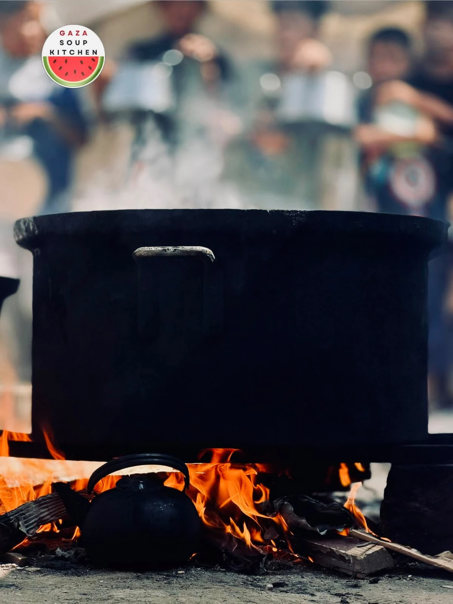
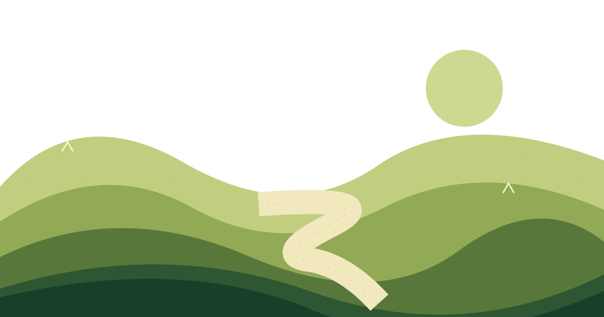
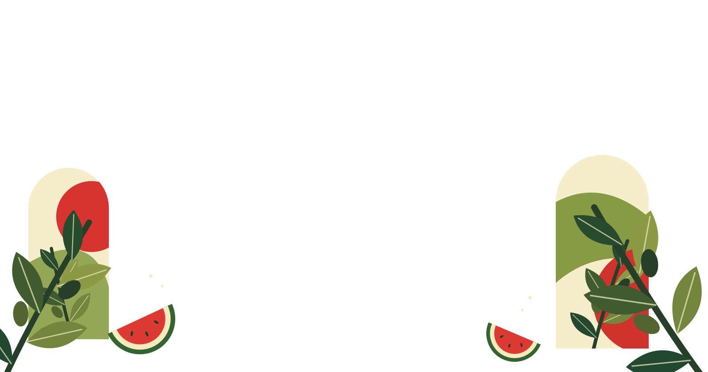
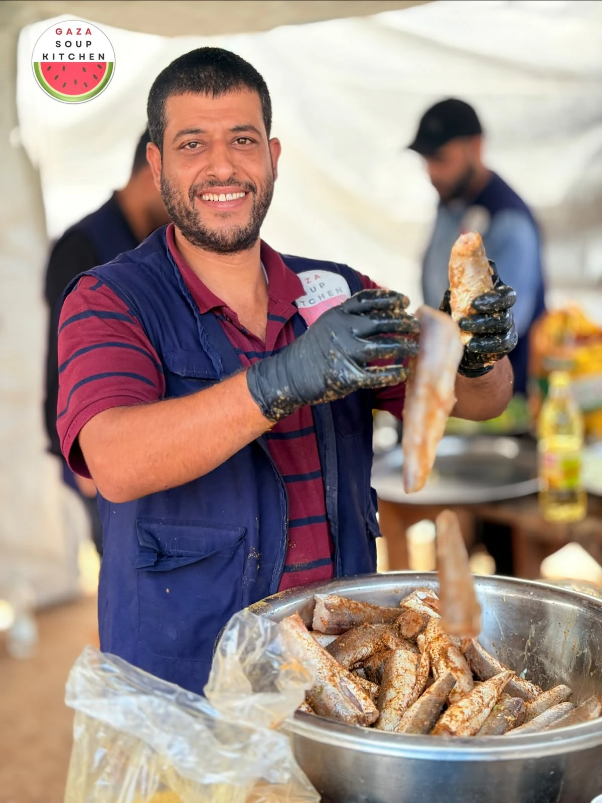
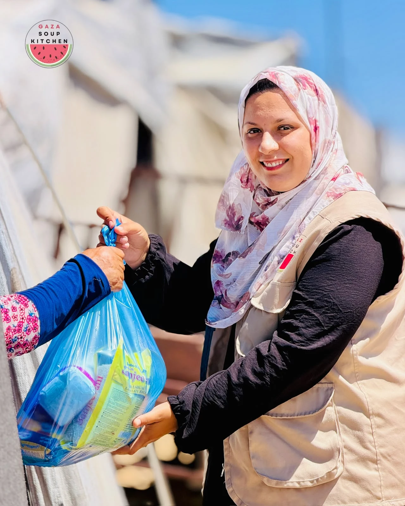
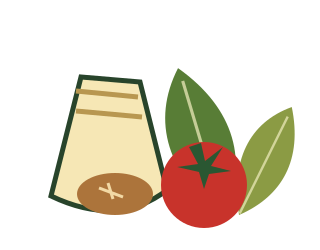
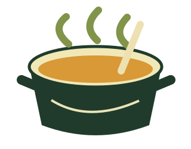
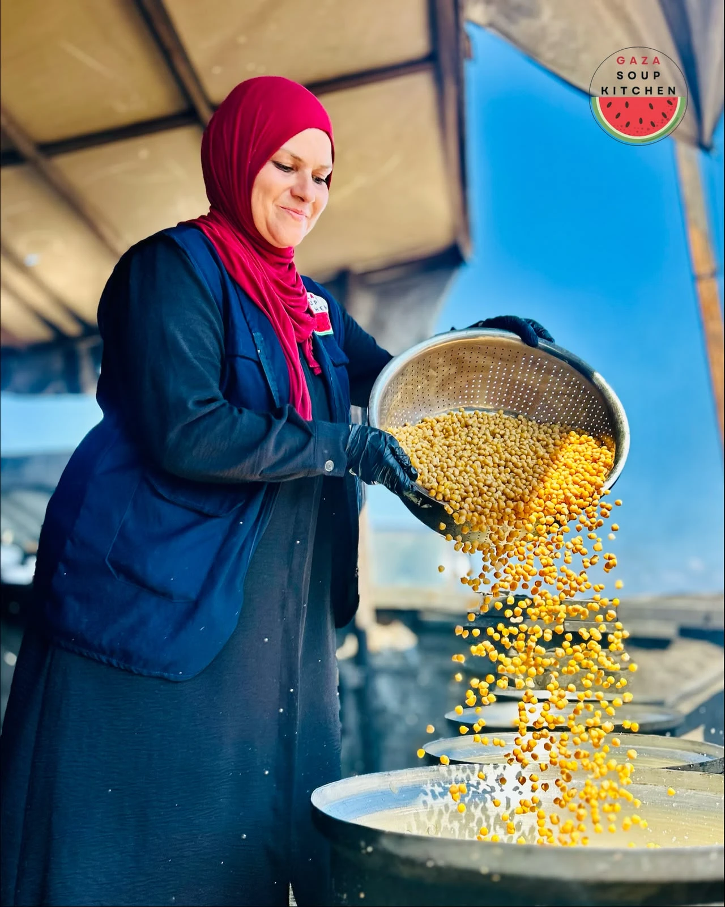
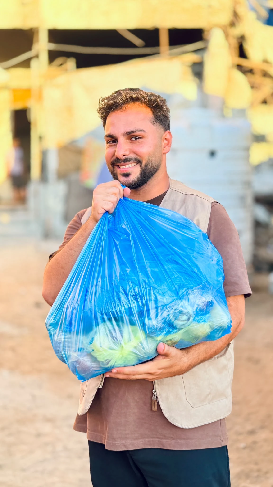
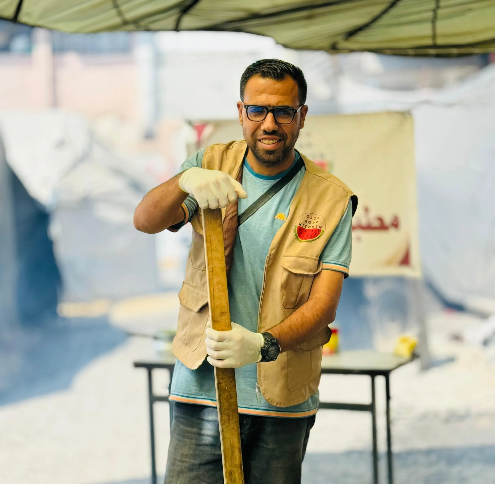

From the kitchenOpen reel ↗
FROM GAZA. FOR GAZA.
Gaza Soup Kitchen.
Nourishing hope, one meal at a time.


One-time · $50 selected
Continue to official donation pagePreview only. No payment or personal information is collected here.
VOICES FROM GAZA
Videos from GSK. The cover photos are authentic GSK images; the video opens when played.



02 / GROUND-LEVEL IMPACT
Every meal begins with local hands and available ingredients.

PrepareFood and supplies
CookAt the kitchen
The initiative began in Beit Lahia in early 2024. Amid scarcity and risk, the team prepares hot meals with what is available. GSK describes itself as people of Gaza serving their own community, sustained by grassroots support.
Source snapshot: GSK official website ↗, checked 19 October 2026. Operating totals require GSK confirmation before final publication.
03 / SELECTED COVERAGE
Eight linked stories from outlets featured on GSK’s current website.
04 / OUR STORY

Brothers Hani and Mahmoud Almadhoun began GSK in Beit Lahia to feed their neighbours.
Mahmoud’s word, “we will continue,” remains central after his death in November 2024.
Local teams continue to prepare meals for their community in Gaza.

THE PEOPLE BEHIND THE WORK05 / DIGITAL COMMUNITY
A planned online home for updates, conversation and supporter resources. It is digital; it does not ask people outside Gaza to travel there to volunteer. Remote and suitable roles may be possible.
Ask about the community ↗MOSTAMREEN · WE WILL CONTINUE
Help keep the kitchen going.
Donate on GSK’s official site ↗ Share
Share